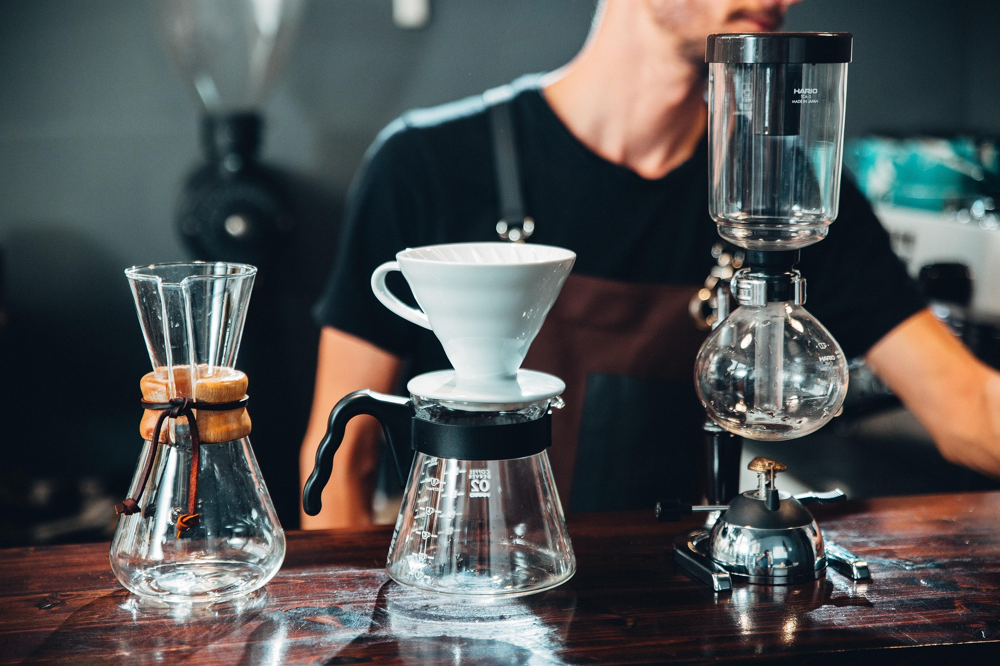
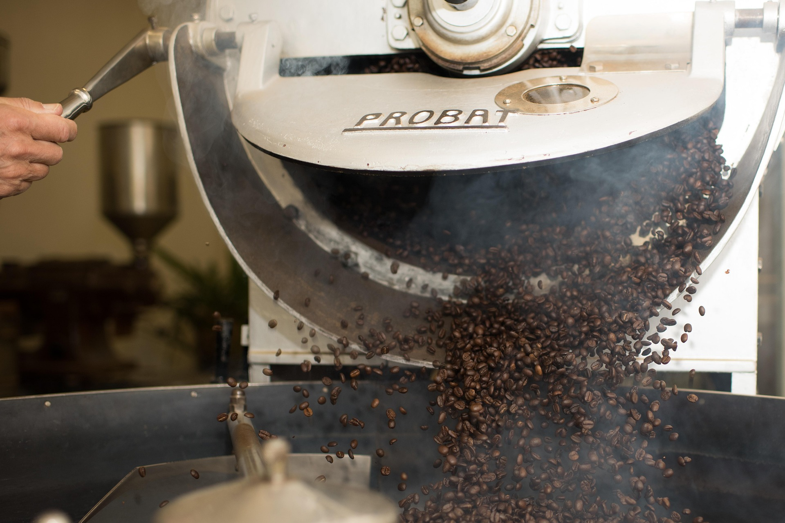
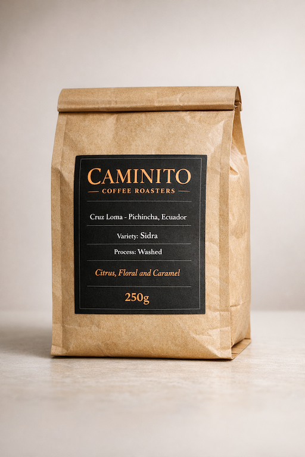
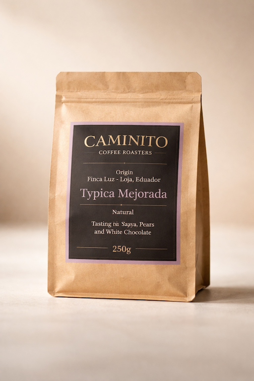
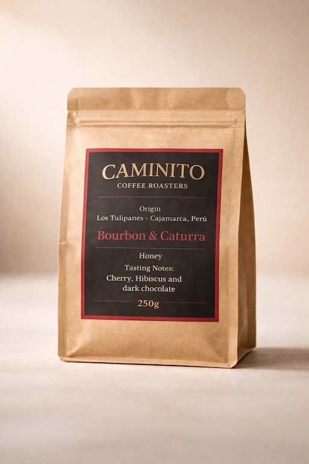

Our well developed place oriented to transform an everyday activity into an immersive sensorial enxperience around the best coffee in town. Located in the nieghborhood of Vallcarca, close to the heart of Barcelona but away of it's busy rythm so you can enjoy and relax. Come visit Us!
We are a talented team working 24/7 on finding outstanding coffees to roast them at our station and have it at your disposal at our Lab.


In Caminito we've designed an specilized lab to prepare our high quality drinks. Here our baristas, with their knowledge and skills can take all the sensorial information of each coffee and brew it into the perfect cup. They Will guide you between the different brewing methods to match the coffee and your prefferences.
Roasting three days a week so we can meet our customers demands and have always fresh roasted beans to brew at our Lab. You can see some of our members working here from the lab and trying the upcoming beans.

This Sidra from the farm Cruz Loma is produced over the Andes mountain range and 20km away from Ecuador's capital Quito in Pichincha. The conditions of this region makes possible to have complex varieties as this wich gives us a sweet and gentle coffee, with a light body and low accidity it reminds us to Peach Yogurt, Datiles and spices.

This Typica M. from the farm Finca Luz in Loja where the best coffees from ecuador are produced. Due to their history and culture around coffee production we get an exceptional clean coffee but with a lot of character. With a medium acidity and a silky body, this coffee reminds us to Guayaba and pear, leaving a nice sweet aftertaste of white chocolate.

This mix of Bourbon and Caturra from Los Tulipanes is the Funky coffee of the season. You will notice the fermentation process that has been developing over Cajamarca, Perú. Here we get clear notes of cherry and hibiscus with a moreheavy body that will remind us to cacao